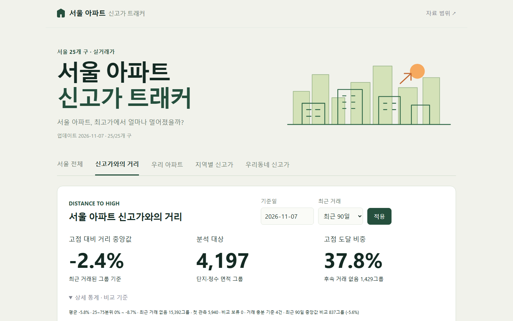
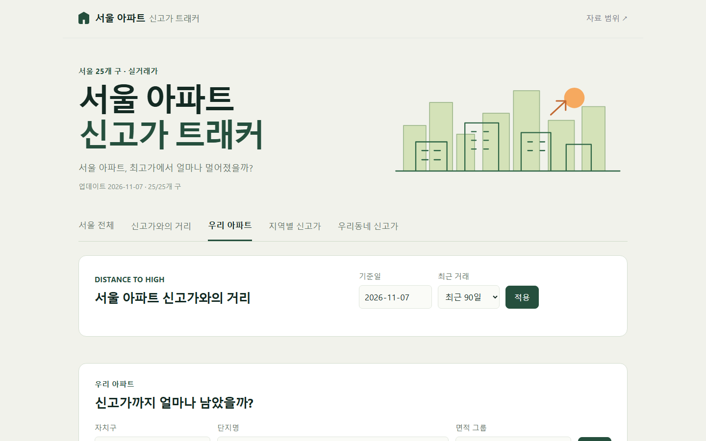
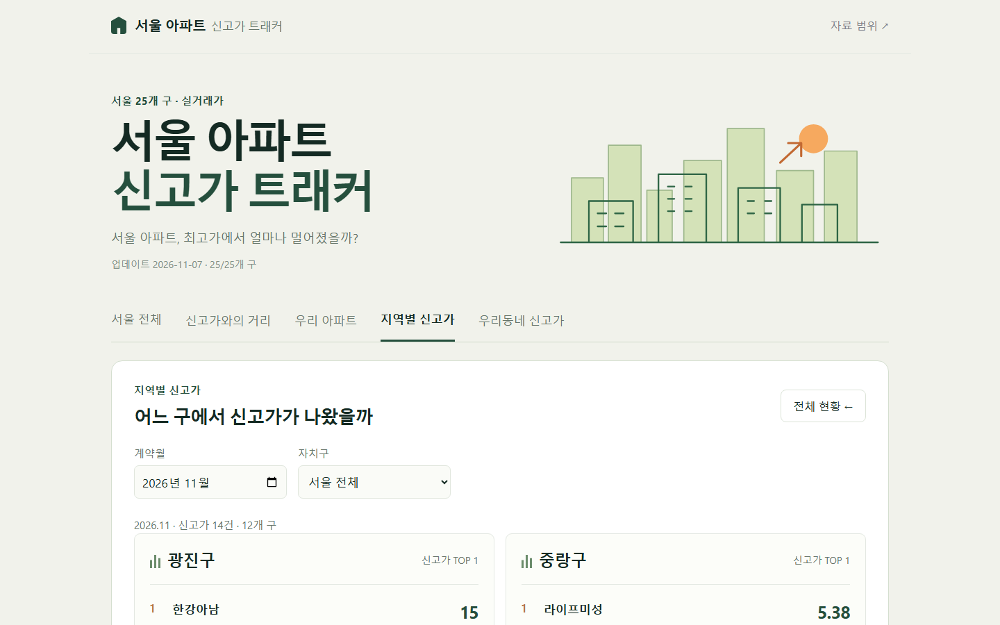

이런 서비스입니다
아파트 가격 뉴스에는 늘 신고가라는 말이 따라붙습니다. 그런데 신고가가 하루에 서울에서 몇 건이나 나오는지, 우리 아파트는 최고가에서 얼마나 멀어졌는지는 뉴스만으로는 알 수 없습니다.
이 트래커는 국토교통부 실거래가를 같은 단지, 같은 정수 면적 그룹 단위로 이어 붙이고, 2021년 1월 이후 그 그룹의 최고가를 넘긴 거래를 신고가로 셉니다. 신고가만 보여 주지 않고 반대쪽도 봅니다. 최근 거래된 그룹이 고점에서 평균 얼마나 떨어져 있는지, 고점을 되찾은 그룹은 얼마나 되는지를 함께 계산해 서울 시장이 지금 최고가의 어디쯤에 있는지 보여 줍니다.
층, 향, 동 차이를 보정하지 않은 실거래 분포이며 현재 시세나 감정평가액, 공식 가격지수가 아닙니다.
무엇을 할 수 있는가
일별, 월별, 전체 기간으로 신고가 거래 건수를 막대로 봅니다. 막대를 누르면 그 기간의 신고가 목록이 열리고, 주요 부동산 대책 발표일 10건을 같은 시간축에 표시합니다. 날짜마다 자료 상태(수집 완료 구, 비교 완료 또는 예정)도 보여 줍니다.
기준일과 기간(최근 거래, 30일, 90일, 180일, 1년)을 고르면 고점 대비 거리 중앙값, 분석 대상 그룹 수, 고점에 도달한 비중이 나옵니다. 구별 거리 순위와 고점 회복 분포도 함께 봅니다.
자치구와 단지명, 면적 그룹을 고르면 그 아파트의 신고가까지 얼마나 남았는지 확인합니다. 오래된 거래도 검색되므로 마지막 계약일을 함께 봐야 합니다.
계약월과 자치구를 고르면 구별 신고가 중 거래금액 상위 3건이 나옵니다. 무작위 4개 구를 보여 주는 "다른 동네 보기"로 둘러볼 수도 있습니다.
구와 법정동, 계약 시작일을 골라 우리 동네에서 새 기록이 나왔는지 찾아봅니다.
조회한 거래를 단지, 전용면적, 거래금액, 층, 계약일, 이전 기록, 상승액과 상승률, 해제 여부 열로 보고 CSV로 내려받습니다.
화면 미리보기
서울 전체 — 신고가 거래 추이

신고가와의 거리 — 고점에서 얼마나 멀어졌나

우리 아파트 — 단지와 면적으로 검색

지역별 신고가 — 어느 구에서 나왔나
데이터와 계산 방법
역대 신고가는 전체 과거 자료를 검증하기 전까지 판정을 보류한다고 화면에 밝히고 있습니다. 같은 날 복수 거래는 별도로 표시하고, 면적은 정수로 묶어(예: 84㎡ 그룹) 비교합니다.
알 수 없는 것들
실거래 신고에는 시차가 있어 최근 계약일의 건수는 나중에 늘어날 수 있습니다. 신고가는 같은 단지, 같은 면적이라도 층과 향, 동에 따라 크게 갈릴 수 있고 이 서비스는 그 차이를 보정하지 않습니다. 따라서 신고가가 많다고 시장 전체가 오른다는 뜻도, 거리가 가깝다고 가격이 곧 오른다는 뜻도 아닙니다.
2021년 이전 거래는 비교에 쓰지 않으며, 최근 거래가 없는 단지가 많다는 사실 자체(최근 거래 없음 15,392그룹)도 통계의 한계로 함께 안내합니다. 가격 변화의 원인은 설명하지 않습니다.
수치는 투자 조언이 아닙니다. 인용하기 전에 국토교통부 실거래가 공개시스템의 원자료를 확인해 주세요.
기술 및 제작 방식
개발 현황
2026-11-07 업데이트, 서울 25개 구 전부 수집 완료. 새 실거래가 신고되면 갱신해 계약일별 자료 상태에 반영합니다.